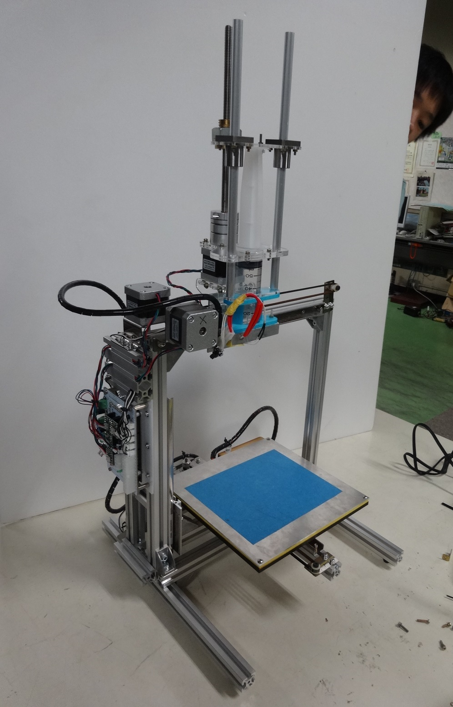
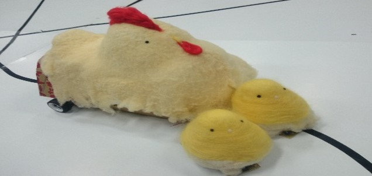

portfolio
2017
- SocialPods

- 学会発表(IEICE CNR Aug. 1, Otaru, Japan)
- バンダイ ビークルモデル ミレニアム・ファルコン

2016
- KnobCon

- 外装デザイン
- Sociable Things
- ハードウェア設計
- スキンシップの再現デバイス

- タミヤ 1/35 Ⅱ号戦車

2015
- Reinforce Type-Hexa

2014
- Montbranc:和菓子を出力する3Dフードプリンタ
- 
- MakerFare Tokyoに出展
- 毎日新聞に掲載
- Chickin in Chickin
- 
- パフォーマンスロボット競技大会出場
- バンダイ MG ジェスタ

2013
- Reinforce Mk2

- マイコンカーラリー南関東大会Advance部門出場
- Micom Mania!

- リズムゲーム
- Tamago Kake Gohan Maker

- ロボTRY出場
2012
- Reinforce

- マイコンカーラリー南関東大会Basic部門出場